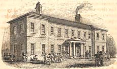
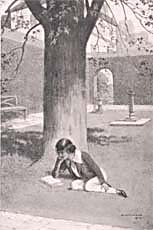
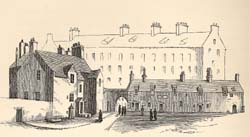
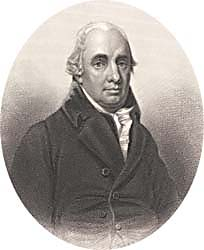

|
|
||||||||
|
|
Home | Corson Collection | Biography | Works | Image Collection | Recent Publications | Portraits | Correspondence | Forthcoming Events | Links | E-Texts | Contact School and UniversityOn his return from Sandyknowe, Scott was privately educated in preparation for the High School of Edinburgh (now the Royal High School), which he entered in October 1779. The School had just moved into its new building on Infirmary Street (portrayed left), now the seat of Edinburgh University's Department of Archaeology. Scott initially felt at something of a disadvantage, for although he was a year older than most of his classmates, his knowledge of Latin, the staple of the school's curriculum, was markedly inferior. Soon, however, he had bridged the gap and became a competent if never brilliant scholar. He was popular with his schoolfellows who admired his refusal to let his lameness prevent him from participating in their boisterous playground games. The young Scott was already a tireless walker, endlessly exploring the streets of the Old Town and familiarizing himself with the terrain that was to feature in The Heart of Midlothian and Redgauntlet.
His education was not confined to the school day. Together with chivalric romances and the poems of Spenser, Ariosto, and Boiardo, Scott was already a voracious reader of history and books of travel. His father had also engaged a private tutor, James Mitchell, to teach him arithmetic and writing (not part of the High School's curriculum). Mitchell, a fiery defender of the Kirk, found time to verse Scott in church history and in the travails of the Covenanters, lessons which would eventually bear fruit in Old Mortality.
Here he made one of the most significant friendships of his life. Among his classmates was the son of a local shop-keeper, James Ballantyne, Scott's future business-partner and printer of his major works. It was also at Kelso, which was equipped with well-stocked circulating and subscription libraries, that Scott discovered the eighteenth-century novel, delighting in the works of Richardson, Fielding, Smollett and Mackenzie. His most pleasurable encounter, however, was with Bishop Percy's great ballad-collection Reliques of Ancient English Poetry. For Scott, it was a revelation that a distinguished scholar could share his enthusiasm for popular poetry and consider it a subject for serious research. The Reliques would later provide the model for Scott's first important publication The Minstrelsy of the Scottish Border. In November 1783, Scott was called home to study classics at Edinburgh University. At only twelve years old, he was a year or so younger than most of his classmates. An initial sense of inferiority was heightened by his ignorance of Greek. With overpopulated lecture-rooms, no tutorials, and uninspiring teaching, there was little hope of him catching up with his peers. At the end of his first session, Scott scandalized his Greek lecturer, Professor Dalzell, by handing in an essay arguing that Ariosto was a superior poet to Homer. He nonetheless became popular with his fellow students, making a number of acquaintances which would prove influential in his professional life as a lawyer, including William Rae, future Lord Advocate, and Archibald Campbell, later judge of the Court of Session. Scott initially spent two years at the College, interrupted by an illness necessitating a further stay at Kelso. Then in March 1786, he began his apprenticeship to the profession of Writer to the Signet in his father's office (see Professional Life). When it was subsequently decided that Scott should aim for the Bar rather than follow his father's career, he resumed his university studies. Before taking up the formal study of Law, he attended classes in Moral Philosophy and Universal History in 1789-90. The former was taught by the charismatic Dugald Stewart (1753-1828) who combined the Scottish 'Common Sense' tradition with elements of empiricism. Believing that the true object of moral philosophy was the study of man in society, Stewart argued that human welfare could be advanced by following universal ideals of truth and virtue. Scott was skeptical of Stewart's belief that irrational institutions and customs could be clinically eliminated, maintaining that these developed in an organic fashion and could not be uprooted without inflicting moral and emotional damage. Nonetheless, Stewart's stress on man as a social being, his view of society as a constantly evolving mechanism, and his faith in universal, trans-historical values would all play their part in the development of Scott's own philosophy of history.
LinksLast updated: 28-Nov-2011
|
|||||||